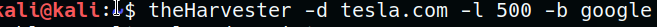

What is that?
theHarvester is a very simple, yet effective tool designed to be used in the early
stages of a penetration test. Use it for open source intelligence gathering and helping to determine a company's external threat landscape on the internet. The tool gathers emails, names, subdomains, IPs and URLs using multiple public data sources that include.
-l 500 = how much search will done
-b google = results from where?
-d tesla.com = target

Results: